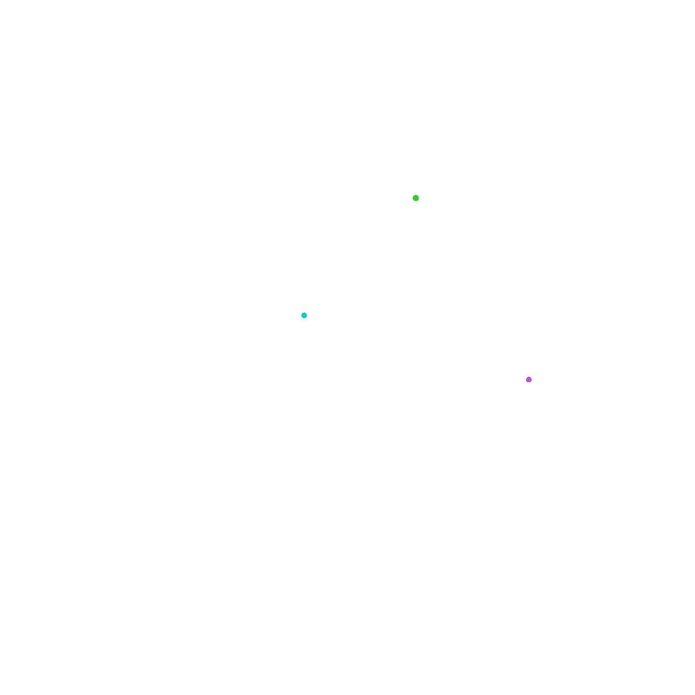

This project is a web application which serves the primary purpose of providing an interactive way for people to learn about the three-body problem, a famous problem in physics.
Users can input custom starting positions, velocities and masses for the three bodies, and within half a minute a video of their motion over the next 10 seconds is generated and displayed. This provides an interactive way for users to explore and understand the complex dynamics of the three-body problem. Explanations of the theory behind the three-body problem are included on the same page. To contrast with the chaotic nature of the three-body problem, the user can also simulate the two-body problem, which is always stable, on a separate page.
However, we recognise that it is difficult to find starting conditions which produce interesting or stable orbits for the three-body problem. If the user is unsure of what to input, they can have a look at some example simulations in the Gallery page, which demonstrate various interesting orbits, including several examples of periodic solutions to the three-body problem which are both instructive and beautiful.
The simulations are created using Python and the Flask web framework. The videos are generated using Matplotlib and FFmpeg. HTML, CSS and Javascript are used to put the simulation in the context of a web application.
Created by Rhema Wen and Vincent Ji for the Westminster School Phsyics Department C2 Project (Demonstrations and Simulations), 2026
